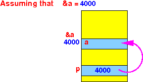

- Recall that:
- The reference operator
&
"computes" (returns) the
address of a variable:
int a = 7; &a returns: the address of the variable aNote:
- Because the variable a is of the type int, the address &a is an address of an int typed variable !!!
- We have just learned how to
define a variable where you can
store an
address
of an
int typed variable:
int *p ;
- The reference operator
&
"computes" (returns) the
address of a variable:
- So now it should obvious
that you can
assign a
reference value to a
reference typed variables:
int a = 7; // an int typed variable // &a = the address of a int typed variable int *p; // p can hold an address of an int typed variable // Therefore: p can store &a !!! p = &a; // Store the address of the int type variable a in pThe result of the assignment statement p = &a is graphically depicted in the following diagram (assuming the the variable a is stored at address 4000 in memory):
 In other words:
- The statement p = &a will make the reference variable p point to the int typed variable a
We will learn to use a reference variable in the next webpage
Before we do this, I need to show you an important fact about reference variables first - see below.
- Very important fact:
int *p; // p can only point to an int typed variable float *q; // q can only point to a float typed variable etc !
Example: this assignment will cause an compile error:
#include <stdio.h> int main(int argc, char *argv[]) { int x = 4; float y = 88; int *p; float *q; p = &x; // int ref p points to int variable x - OK q = &y; // float ref q points to float variable y - OK p = &y; // int ref p points to float variable y - Error q = &x; // float ref q points to int variable x - Error }Compiler messages:
cs255-1@aruba (5555)> gcc ref-var3.c ref-var3.c:15:7: warning: assignment from incompatible pointer type [-Wincompatible-pointer-types] p = &y; // int ref p points to float variable y - Error ^ ref-var3.c:16:7: warning: assignment from incompatible pointer type [-Wincompatible-pointer-types] q = &x; // float ref q points to int variable x - Error ^
- Example Program:
(Demo above code)

- Prog file: /home/cs255001/demo/C/set2/ref-var3.c
How to run the program:
- To compile: gcc ref-var3.c
- Check error messages